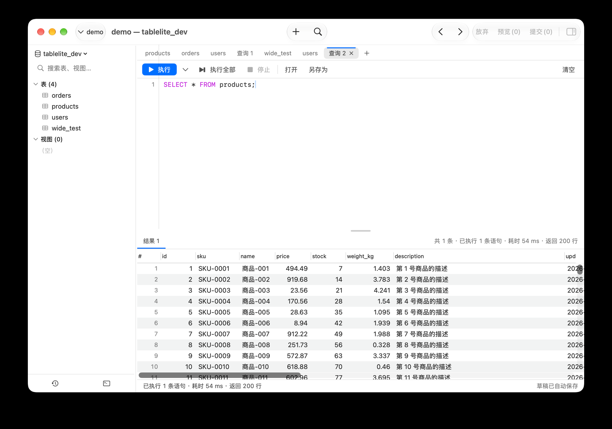
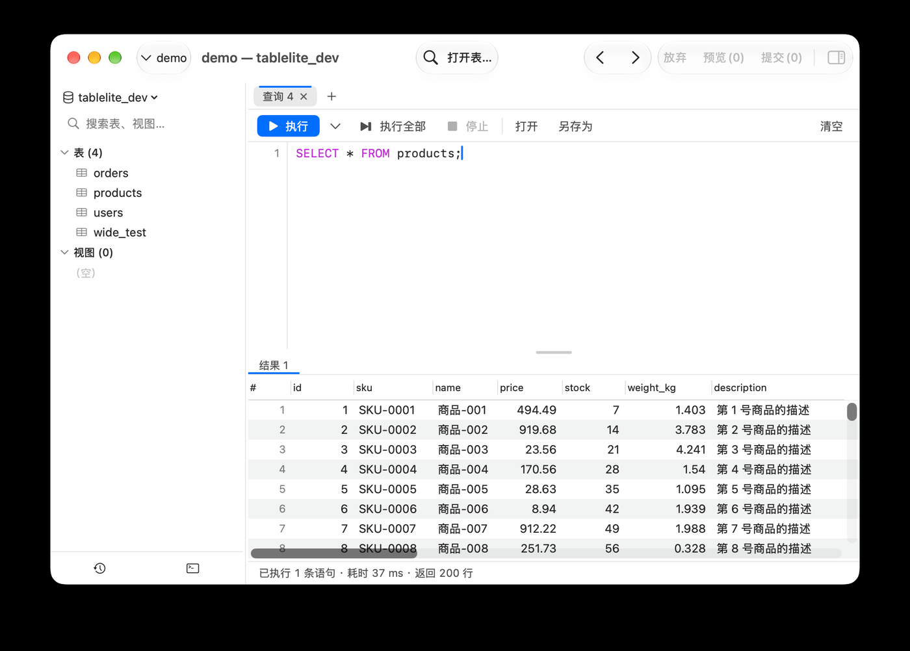

截图来源：一次「打开查询标签 → 跑 SELECT * FROM products; → 看结果」的常规操作。窗口里同时暴露了工具栏、侧栏、标签栏、编辑器、结果区、状态栏，适合一次性做体检。
A 高优先：每次用都会撞到，或信息本身在互相打架；
B 细节打磨：不影响正确性，但一张图里能看出别扭；
C 可放一放：纯观感 / 低频，改不改都行。
现象（截图里哪一处）→ 依据（specs 条款或代码位置）→ 建议（改成什么样）。
最后一行是文档波及面：要动 specs 意味着需求/界面表现变化，按 AGENTS 规则 7 需要先拿授权。
多数项是「设计取舍」而非错误。凡属取舍的，按 AGENTS 规则 3 都应登记到
docs/tech-designs/13-open-questions.md，而不是直接改代码。
红＝A 高优先，蓝＝B 细节，灰＝C 可放一放，黄＝待确认。同一项出现两处时，两个位置都打同一个编号。

结果标签栏右上写 共 1 条 · 已执行 1 条语句 · 耗时 54 ms · 返回 200 行，底部状态栏又写 已执行 1 条语句 · 耗时 54 ms · 返回 200 行，两者只差开头那一段。
specs/02-workspace.md §7：底部状态栏已去掉，查询执行进度与结果概要归查询编辑器自己的状态栏；specs/06 §1 线框图里结果标签栏亦有概要 —— 两处并存属设计未收敛。代码：QueryResultAreaView.summaryText / QueryEditorView.statusBar。
二选一：标签栏只留 「共 N 条」（多结果时才有意义），执行耗时/行数只留状态栏；或反过来，状态栏只留「正在执行…」这类瞬时进度。另外 共 1 条 语义含糊（1 个结果集？1 条语句？），建议写成 「1 个结果集」，且仅当 > 1 时显示。
最右一列表头只剩 upd（连省略号都没有），单元格是半截 2026-…；水平滚动条到底之前，用户不知道还有没有列。
specs/06 §4 要求结果网格支持列显隐 / 导出；表数据网格有底部条（GridStatusBarView：筛选 / 列 / 导出），结果网格只靠右键 —— 能力对等但可发现性不对等。
三步递进：① 表头截断统一带 …；② 右缘加渐隐或滚动阴影，明确「还有内容」；③ 给结果网格一个轻量工具条（返回 N 行 · 列 · 导出），与表数据网格对齐。
状态栏最右长期显示 草稿已自动保存，每次编辑都亮一次，永久占位。
specs/06 §2 只说「自动保存为草稿」，没要求告知；specs/12 §3 的瞬时消息统一走顶部轻提示。实现见 QueryEditorView.swift（viewModel.hasFile ? "未保存" : "草稿已自动保存"）。
正常路径静默；只在异常时说话：保存失败、或「关联了磁盘文件且未保存」才显示 未保存。省下的状态栏右端还能放更该常驻的东西（比如当前库 / 只读标记）。
脚本只有一行，编辑器却占掉近一半高度（大片空白）；结果网格只剩 11 行可见，而结果有 200 行。
specs/06 §1：分隔条可拖拽、比例被记住 —— 比例本身合规，问题在默认值与首屏不随内容调整。editorHeight(in:) 与 Preferences.editorResultSplitRatio。
① 默认比例下调（例如 0.35）；② 首次执行后若脚本行数少、结果行数多，自动给结果区让位（只自动一次，之后尊重用户拖拽）；③ 双击分隔条 = 恢复默认。
标题栏正中一个 +（WorkspaceToolbar 的 principal 区），标签栏末尾又一个 +（TabBarView）。同一个动作，两个入口，图标一样。
specs/02 §2 规定工具栏中间为 + 新建查询 / + 打开表…；§6 又允许标签栏有 +。两条各自成立，合起来就重复了。
只留标签栏那个（贴着标签、符合浏览器式心智），标题栏中间只留「打开表…」搜索；或者反过来保留标题栏、去掉标签栏的 +。二者留一个，并补 ⌘T 提示。
编辑区左侧行号栏的那条 1px 竖向分隔线并不局限在编辑区：它从标签栏顶边开始，向下贯穿整个编辑器工具栏，一直到编辑区底边才停。最刺眼的是它直接画在「执行」按钮上面——蓝色按钮中间能看见一道竖缝。
像素取样：这条线在 x=638–639，与侧栏边界 x=545 平行；y 从 182（标签栏顶边）连续到 922（编辑区底边）。其中 y=256–303 段取样为 (0,100,230)，而按钮本体是 (0,111,255) —— 说明是叠加绘制，不是排版错位。代码上这条线由 LineNumberRulerView.drawHashMarksAndLabels 按 bounds.minY…bounds.maxY 画出，而越界的 ruler 没有被裁剪。
别再用 NSRulerView 的 bounds 画分隔线：① 改在 scrollView 边缘叠一条 1px 分隔线（或先与 scrollView.bounds / visibleRect 求交再画）；② 顺手让承载视图裁剪越界内容（clipsToBounds / masksToBounds），把这类越界绘制一次性堵住。样式与第 14 条一起定。需实机复核是「bounds 越界」还是「父视图未裁剪」。
标题栏最左只画出 ⌄ demo，没有绿点 —— 而标签页里明明已经取到数据，说明连接是正常的。
specs/02 §2 / §7 要求切换器显示连接状态点 + 连接名；代码 ConnectionSwitcher 的 label 里第一个元素就是 SessionStatusDot(state:)。
先确认是渲染被吃掉（例如 toolbar 的 label 样式 / 圆点尺寸过小）还是截图当时状态特殊。若是 bug 就修；若是有意去掉，则要同步 specs/02。
标题栏 demo — tablelite_dev，侧栏顶部 tablelite_dev ⌄，切换器 demo。库名与连接名各出现两次。
实现见 WorkspaceView.windowTitle（"连接名 — 库名"）；specs 未定义窗口标题。specs/02 §4 只说侧栏顶部是库切换器。
标题简化到只剩库名（或干脆不显示），连接身份交给切换器；侧栏库名保留（它是可操作的控件，不是重复展示）。
行 11 的上半截被 overlay 滚动条盖住，看起来像「这行坏了」。
系统 overlay 滚动条行为；07-data-grid.md 只约束了行高与隔行色，未提底部留白。
给 NSScrollView 设一点 contentInsets.bottom（例如 2–4pt），让滚动条落在留白上而不是行中间；结果网格与表数据网格都要。
# 列宽约 70pt，只放 1–3 位数字；由于查询结果正好带 id，两列数值完全一样，视觉上像重复列。
行号列是结果网格的定位辅助（QueryResultGridView），specs 未规定宽度。
宽度按行数位数自适应（如 36–48pt）；这个案例里「重复」是数据巧合，不用特殊处理，但窄列能让 name 等关键列多显示几个字。
放弃 · 预览(0) · 提交(0) 整体半透明禁用，但宽度照占；(0) 本身也没有信息量。
specs/02 §2：条数为 0 时整体禁用（半透明）—— 现状符合 specs，属观感问题。
零变更时只显示一个禁用的 提交（不带 (0)），有变更时才展开成三件套并带上条数。标题栏右端能省出约 2 个按钮的宽度，留给连接信息或状态点。
标签栏里 users 出现两次，标题一字不差。
specs/02 §6：打开已存在的同类标签应切到已有标签；只有右键「在新标签打开」（forceNew）才会出现重复。所以这多半是「用户自己开了两个」，不算 bug，但缺区分手段。
重复的同类标签自动加序号后缀（users / users · 2），或给第二个标签加一个细微的「副本」标记。
视图 (0) 下面又跟一行 （空），两行只说「没有视图」。
specs/02 §7 明确要求：分组标题显示 (0)，展开后显示「（空）」。所以这是按需求实现的。
若要压缩，只能在 specs 层面改（例如空分组直接不展开箭头）。改动小、收益也小 —— 列为「可改可不改」，不建议现在动。
整条 32pt 高，只放了一个 结果 1 和右侧概要。
specs/06 §4：多结果时才需要标签切换；单结果时它是纯装饰。
单结果时把这一行压成一条 20pt 细条（只留概要），多结果时恢复标签形态。与第 1 条一起改最省事。
行号 1 与 SQL 正文之间留白偏大，且没有竖向分隔线。
specs/06 §2 只要求「左侧行号」。
行号右对齐、缩到 32–40pt，并加一条极淡的竖向分隔（或在当前语句高亮块左缘对齐）。长脚本时视线跳跃会明显少。注意：分隔线已经有了，但它越出编辑区（见第 16 条），先修越界再调样式。
编辑器工具栏右侧只有 清空 一个按钮，离 打开 / 另存为 很远，而它是不可撤销的动作。
specs/06 §1 线框图未规定清空的位置。
要么挪到 另存为 旁边并用次要样式，要么加撤消提示（清空后顶部轻提示 已清空 · 撤销）。
「要动 specs」＝需求/界面表现有变化，按 AGENTS 规则 7 必须先拿你的授权；只标 manual 的表示需求没变、只是说明书要跟着图示更新。
| # | 优化点 | specs | manual | tech-designs | 主要代码位置 |
|---|---|---|---|---|---|
| 1 | 结果概要去重 | 要 | 要 | — | QueryResultAreaView · QueryEditorView |
| 2 | 右缘裁列 / 结果网格工具条 | 要 | 要 | — | QueryResultGridView |
| 3 | 草稿提示静默化 | 要 | 要 | — | QueryEditorView |
| 4 | 默认分割比 / 自适应 | 要 | 要 | — | QueryEditorView · Preferences |
| 5 | 去掉重复的「新建查询」入口 | 要 | 要 | — | WorkspaceToolbar · TabBarView |
| 6 | 连接状态点（待确认） | 看结论 | 看结论 | — | WorkspaceToolbar · SessionStatusDot |
| 7 | 窗口标题简化 | 可加 | — | — | WorkspaceView |
| 8 | 网格底部留白 | — | — | 07 §4 | QueryResultGridView · DataGridView |
| 9 | 行号列宽 | — | — | 07 | QueryResultGridView |
| 10 | 变更按钮组收起 | 微调 | 要 | — | WorkspaceToolbar |
| 11 | 重复标签加序号 | 补一条 | 要 | — | Tab · TabBarView |
| 12 | 空分组压缩 | 需授权 | 要 | — | ObjectTreeSidebar |
| 13 | 单结果时压扁标签栏 | — | — | — | QueryResultAreaView |
| 14 | 行号区样式 | — | — | 10 | SQLTextView |
| 16 | 行号分隔线越界绘制（本轮补充） | — | — | 10 §2 | SQLTextView · LineNumberRulerView |
| 15 | 「清空」位置 / 可撤销 | 要 | 要 | — | QueryEditorView |
前两批是「改了就能看见」的；第三批要先确认口径再动手。
specs/ 与 manual/ —— 草案经你同意后，才走 tech-designs → 代码。
本轮先做 4 项（1 / 3 / 5 / 16），分支 feat/ui-polish，一项一个 commit，文档走 specs → manual → tech-designs → 代码。
| 条目 | 拍板口径 | commit | 验证 |
|---|---|---|---|
| 1 / 13 | 执行统计只在编辑器状态栏；标签栏只写「N 个结果集」且 N>1 才显示；单结果时标签栏压成细条 | aa4dc5e | 单语句 → 细条无统计 + 状态栏 已执行 1 条语句 · 耗时 43 ms · 返回 200 行；执行全部 → 2 个结果集 可切换 |
| 3 | 保存成功静默；只有「未保存」才提示，关掉自动保存时用橙色提醒 | 87ae7da | 输入后草稿落盘、状态栏无提示；关掉偏好再输入 → 橙色 未保存（同时修掉误报的 bug） |
| 5 | 只留标签栏 +；标题栏「打开表…」带文字；悬停提示补 ⌘T | 7ef9889 | 标题栏只剩「🔍 打开表…」；无标签时 ⌘T 仍可新建 |
| 16 | 绘制矩形与可视区求交（防御）+ 承载视图裁剪（真正的修复） | 235b57d | 竖线止于编辑区；「执行」按钮上不再有竖缝；三处使用场景都不越界 |
bounds 越界」，实机插桩后发现越界的其实是
AppKit NSRulerView 自带的那条边缘线（把自绘线改成红色、或直接 return 不画，灰线仍在；
去掉 ruler 才消失）。所以有效修复是 clipsToBounds，求交那一步作为防御保留。详见 235b57d 的 commit body。

结果标签栏只剩 结果 1（细条），没有重复统计；已执行 1 条语句 · 耗时 37 ms · 返回 200 行 只出现在底部状态栏。
状态栏右端干净：既没有常驻的「草稿已自动保存」，也没有多出来的东西（3c 决定留空）。
标题栏中段只有「🔍 打开表…」（带文字），标签栏末尾只有 +；两处不再重复。
行号栏那条竖线止于编辑区底边，不再穿过工具栏，也不再叠在「执行」按钮上。
19791ed：SQLTextView 头注释里的「服务三处（含预览 SQL 面板）」已过时 —— 预览走 SQLHighlightedText，改为两处。
第 2 / 4 / 6–15 条按原计划分批推进（见上一节的推进顺序）；第 8 条（滚动条压住最后一行）在第 2 条一起做最合适。